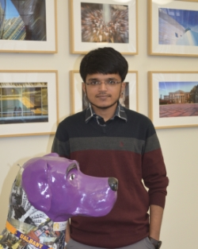

Dhruv Patel
Assistant Programmer
E-mail: drpatel@albany.edu
Specialization:
Information Technology, Information system and Technology
Projects:
Healthy Families New York
NYS Quality and Technical Assistance Center
Dhruv joined CHSR as an assistant programmer in June, 2015. He works with the IT team on the Compass project, currently managed by NYS Quality and Technical Assistance Center as well as Health Families New York (HFNY). Before joining CHSR, Dhruv was a volunteer Web Developer at a non-profit organization.
Dhruv is pursuing his Master's degree at SUNY Albany, majoring in Information Science. His field of concentration is Information Systems and Technology. Dhruv received his Bachelor's degree in Information Technology from India with his primary interest being web development.